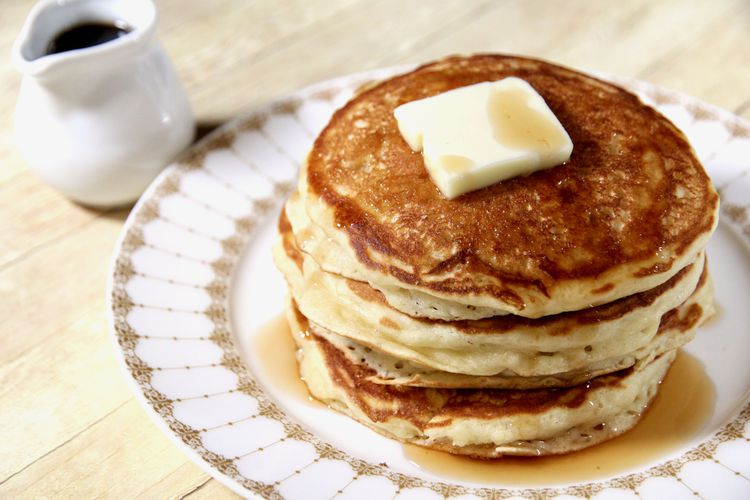

Buttermilk Maple Pancake

Description
These are the best buttermilk pancakes.
They are light and fluffy with a touch of maple flavor.
Recipes
2 cups all-purpose flour
¼ cup white sugar
2 teaspoons baking powder
1 teaspoon baking soda
1 teaspoon salt
2 cups buttermilk
2 large eggs
¼ cup maple syrup
¼ cup unsalted butter, melted
cooking spray
Steps
- Whisk flour, sugar, baking powder,
baking soda, and salt together in a large mixing bowl;
set aside.
- Whisk buttermilk, eggs, maple syrup, and butter together in another bowl;
whisk in flour mixture until lumps are gone.
- Heat a large skillet over medium heat; coat with cooking spray.
Drop batter by 1/4 cupfuls onto skillet;
cook until bubbles appear on the surface, 3 to 4 minutes. Flip;
cook until browned on the other side, 2 to 3 minutes.
Repeat with remaining batter.
Back to the Main Menu